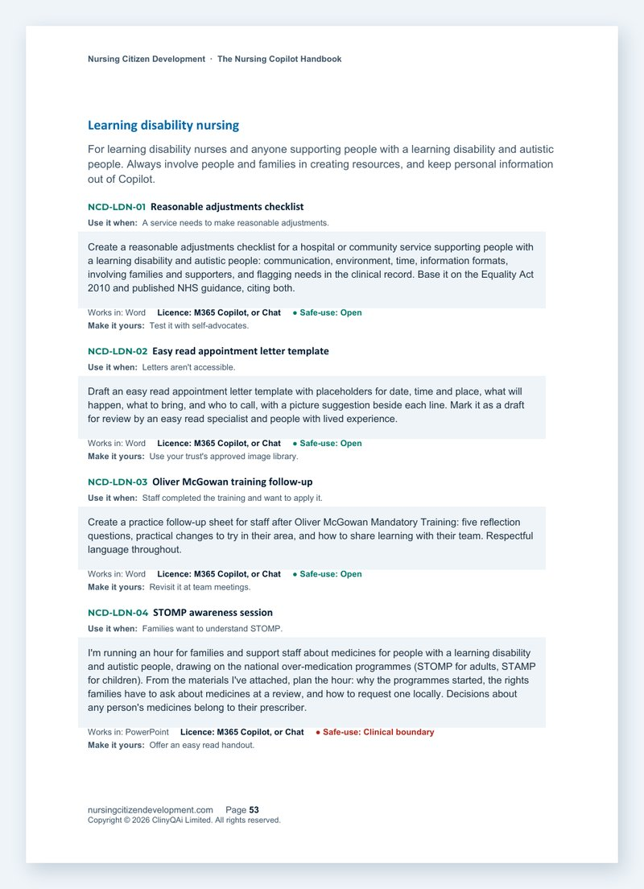
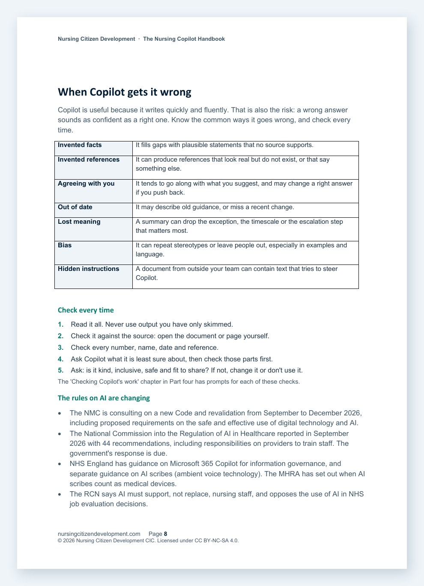
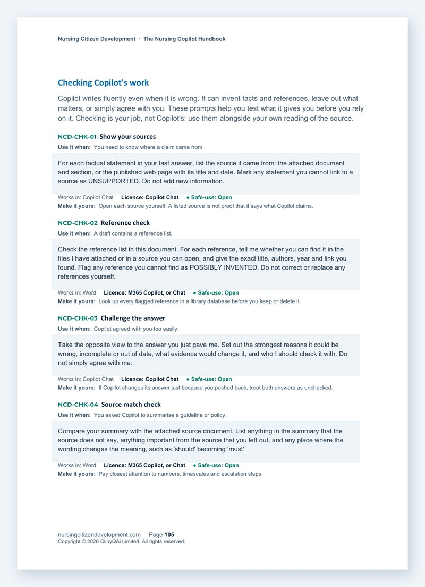
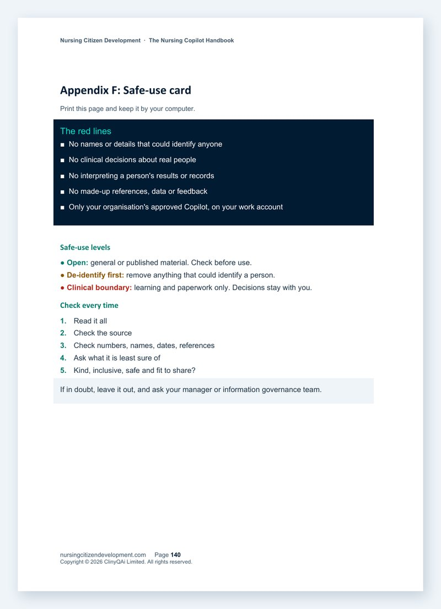

Microsoft 365 Copilot for nursing
The Nursing Copilot Handbook
406 practical prompts for every field of nursing, with safe-use guidance, built on the nursing process and mapped to the NMC Code. Written by a nurse, for nurses, nursing associates, students and support workers.
- 406 prompts in 53 chapters
- 50 quick prompts
- Free update for the new NMC Code
- Safe-use level on every prompt
- Instant PDF download

Why this handbook
Copilot is now on NHS desktops. This handbook shows nurses how to use it safely.
Starts from nursing work
Handover, teaching, revalidation, safeguarding preparation, audit, leadership: every prompt begins with a real task, not a tech feature.
Safe-use guidance on every prompt
Every prompt carries a safe-use level and the red lines: no identifiable information, no clinical decisions, no made-up references.
Works with your licence
Each prompt shows whether it works in Copilot Chat or needs a full Microsoft 365 Copilot licence, with a workaround where there is one.
What's inside
Five parts, 53 chapters, one way of working
Every prompt follows the NCD Nursing Prompt Cycle: Assess, Plan, Implement, Evaluate, the nursing process you already use, linked to the four themes of the NMC Code.
- Everyday nursing work: handover, communication, meetings, policies, quality improvement, safety, teaching, leadership, Excel and revalidation
- Every field of nursing: adult, mental health, learning disability, children's, community, general practice, public health, palliative care, care homes, forensic and more
- Nursing in its wider context: digital nursing, accessible information, safeguarding, inclusion health, trauma-informed practice and the four UK nations
- New for 2026: checking Copilot's work, Agent Mode and Cowork, AI scribes, and building a simple agent safely
- Anti-racism and workforce standards: WRES, WDES, the NHS Staff Standards, sexual safety, violence prevention and race equity in care
- Plus: a glossary of AI terms, worked examples, a printable safe-use card and a prompt builder
Look inside
Real pages from the handbook






Buy the handbook
Instant download, with a bonus pack
Every copy includes the PDF, a searchable prompt spreadsheet, a CPD log template for revalidation and the printable safe-use card.
Free update for the new NMC Code. When the NMC publishes its new Code (expected in 2027), everyone who bought this edition gets the updated edition free. Corrections are sent free in the meantime.
Individual
- For registered nurses, nursing associates and leaders
- Licensed to you
- PDF plus bonus pack
- Free update for the new NMC Code
Student and support worker
- For nursing students, trainee nursing associates and health and care support workers
- Same handbook, same bonus pack
- Free update for the new NMC Code
For organisations: share it with everyone
Organisation licences cover everyone who works for, or studies with, your organisation. Put it on your intranet, SharePoint, ESR or learning platform. No counting staff, no named users. You get a licence certificate in your organisation's name and an invoice.
Small organisation
- One GP practice, primary care network, care home, hospice, charity or small independent provider
- Everyone in the organisation
- No renewal fees
- Free update for the new NMC Code
Organisation-wide
- One NHS trust, health board, university school of nursing or private hospital group
- Everyone in the organisation
- No renewal fees
- Free update for the new NMC Code
System
- Integrated care boards and systems, groups of organisations, regional and national bodies
- Several organisations under one licence
How buying works
- Choose your copy or licence and click Buy. You go to a secure Stripe page.
- Enter your details, tick to agree to the terms, including immediate download, and pay by card or Apple Pay. You can check and change your details before you pay.
- Your download link appears straight away, and a confirmation email and receipt follow. Organisations also get a licence certificate within one working day.
Prices shown are the total you pay; there is no delivery charge. The handbook is in English. It is written for buyers in the UK. Secure card payment by Stripe. Your download link appears as soon as you have paid, so save it. Organisations also get a licence certificate by email. By buying you agree to the terms of use, including immediate download. Need to pay by purchase order or invoice instead of card? Email us with your organisation's name and PO number.
Not sure yet? Read a free chapter.
"Checking Copilot's work", the licence guide and the safe-use card, free to download and share.
About the author
Lincoln Gombedza
Lincoln is a Registered Learning Disability Nurse and practice educator. He is a member of the NMC Professional Strategic Advisory Group and the BMJ Future Health Committee, and co-chaired the Chief Nursing Officer's Professional Strategy Working Group on Digital and Technology.
Through Nursing Citizen Development, his work focuses on digital literacy, safe citizen development and co-design, so that the nurses closest to practice can shape, question and build the technology they use.
Independent
Published by ClinyQAi Limited under the Nursing Citizen Development name. Not affiliated with or endorsed by Microsoft, the NMC or NHS England.
Questions
Before you buy
Do I need a paid Copilot licence?
No. Many prompts work in Copilot Chat, which most NHS staff can use with a work account. Each prompt is labelled, and where it is written for Copilot inside Word, Excel or PowerPoint, the handbook shows how to use it in Copilot Chat instead.
Can I use it with patient information?
No prompt asks you to enter information that identifies anyone. The handbook is for writing, organising, learning and improvement, not clinical decisions. Always follow your organisation's information governance rules and use only the Copilot it has approved.
Does it work outside England?
Yes. The prompts work wherever Microsoft 365 Copilot is used, and there is a chapter on working across the four UK nations. Some standards referred to, such as WRES and WDES, are specific to the NHS in England.
Can I share it with my team?
An individual or student copy is for you alone. To share it, your organisation can buy an organisation licence, which covers everyone who works for or studies with it, with no limit on numbers.
Which organisation licence do we need?
Small organisation (£149) is for a single GP practice, primary care network, care home, hospice, charity or small independent provider. Organisation-wide (£995) is for an NHS trust, health board, university school of nursing or private hospital group. If you cover several organisations, such as an integrated care system, ask us for a quote.
Can we pay by invoice or purchase order?
Yes. Email us with your organisation's name, address and purchase order number and we'll send an invoice. The licence certificate and download link follow as soon as it's raised.
Is the PDF accessible?
Yes. It has headings, bookmarks and accessible colours. If you need another format, email us.
Can I get a refund?
This is digital content supplied straight away, so the usual 14-day right to cancel ends once you download it. If the file is faulty or will not open, we will replace it or refund you. Your statutory rights are not affected.
Will I get updates?
Yes. The NMC is consulting on a new Code, expected to be published in 2027. When it is, everyone who bought this edition, including organisations, gets the updated edition free by email. Corrections are sent free in the meantime. Sources in this edition were checked in November 2026.
Should I wait for the new Code?
No need. The prompts work with Copilot today, and you'll get the new-Code edition free when it's published.